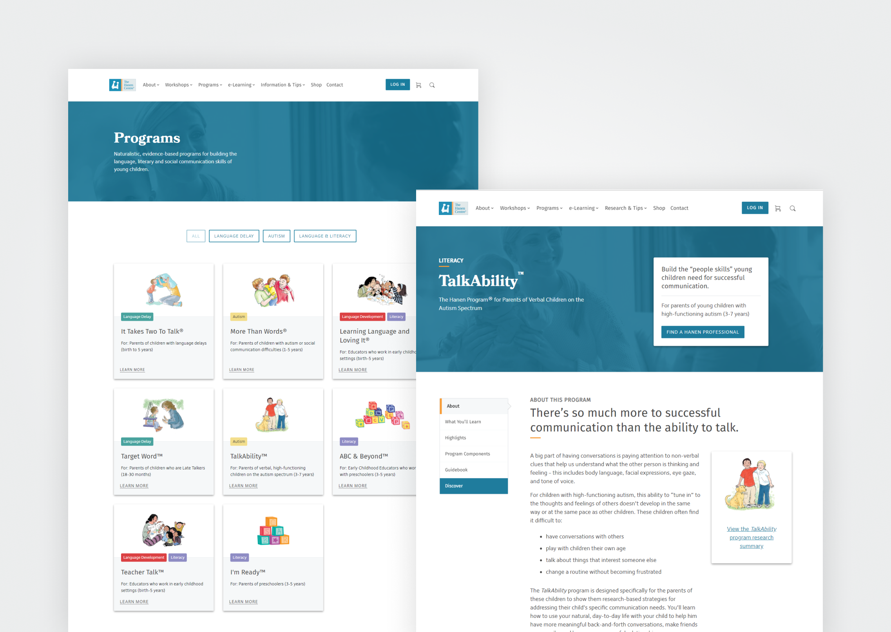
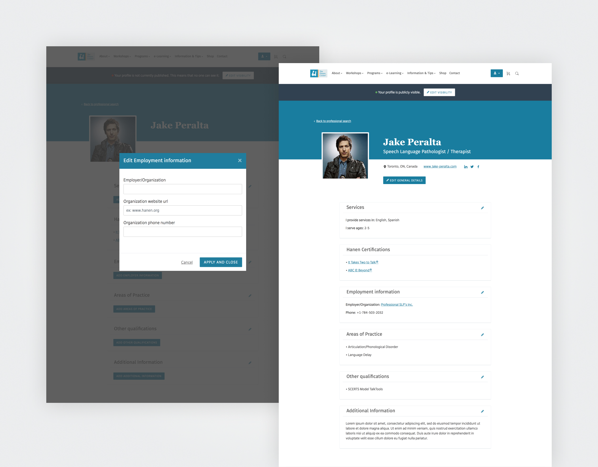
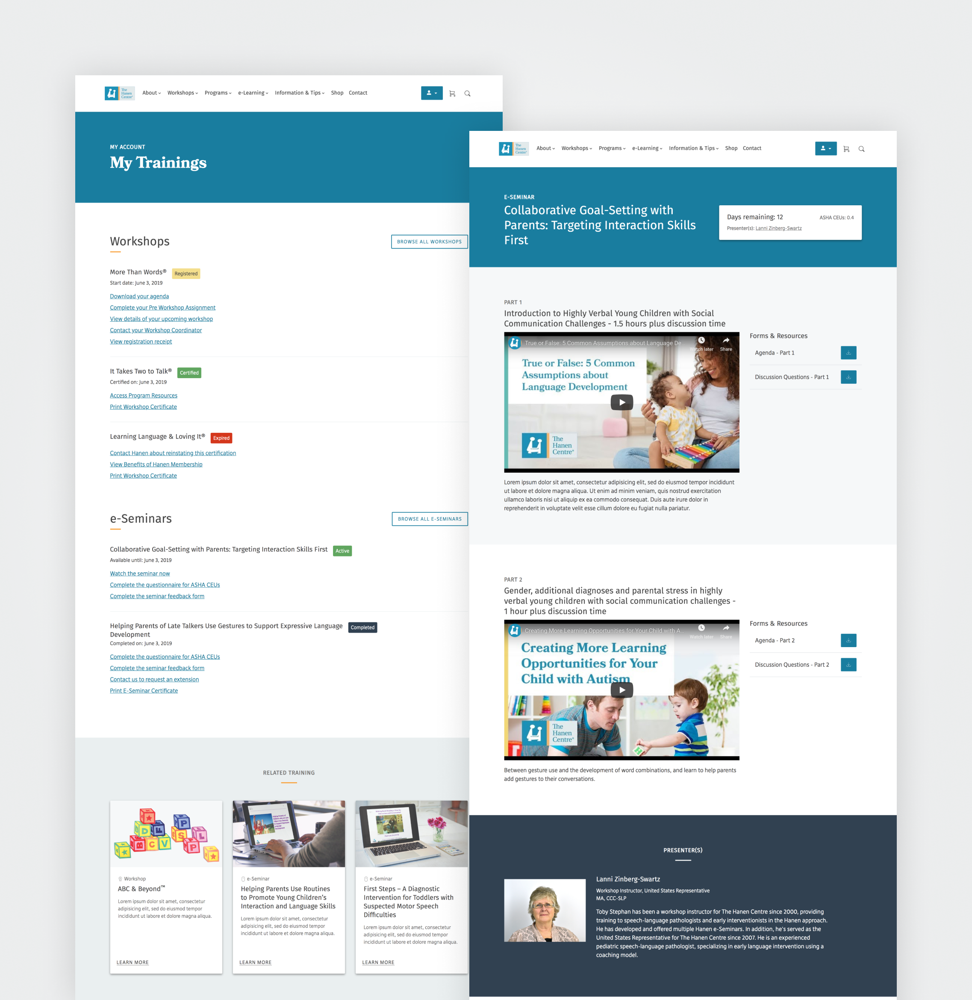
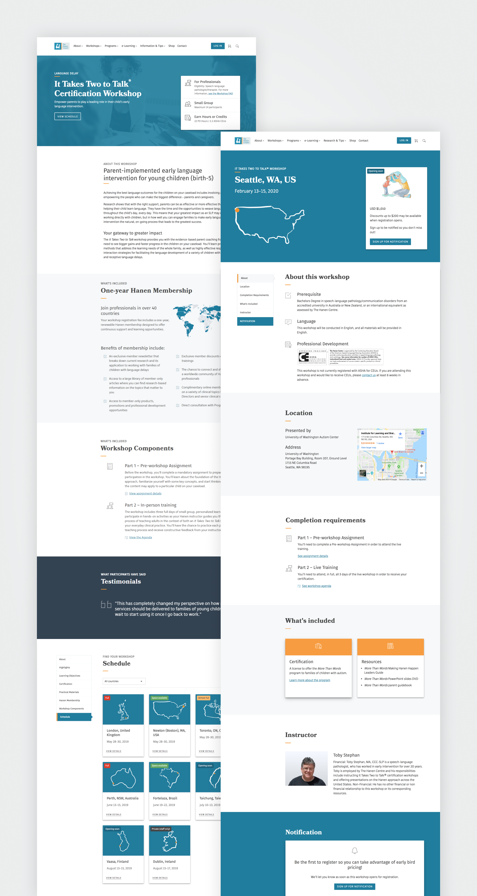

Product Designer
2018 - Current
What does the future of a literacy non profit look like on the internet? How do you jump start a website at a company that has been successfully dealing in print products for 40 years, but is suddenly and rapidly expanding highly diverse digital offerings? How can you build a product that needs the budget of 20 people with the budget for 4?
When I first joined Hanen, their website was painfully outdated, hemorrhaging users, and preventing new leads.
Through user interviews, user feedback surveys, and user testing the team had learned that the current website was prohibitively difficult to use.
Professionals struggled to complete registrations, purchase products, and navigate an incredibly complex site hierarchy.
Parents looking for help for themselves and their children struggled to understand the actual services Hanen provided, and consistently missed the helpful resources buried in orphan links and misnomer titles.
The confusion stemmed primarily from two main issues:
First, the fixed nature of the CMS had built up so much technical debt that Hanen couldn’t implement improvements even when clear problems and solutions were known.
Second, Hanen was expanding rapidly beyond it’s base in trainings and print resources into a multitude of digital offerings, but struggling to corral these as part of the central products, which resulted in a cascading flow of orphaned campaigns, nested micro sites, and unmaintainable content.
We knew that Hanen’s future business rules and new programming were only going to become larger and more complex (see the highly simplified member journey above), but we also knew from research that users struggled to engage with custom products if they did not understand the core product.
We needed to be able to jump in any direction for future, unknown types of products while simultaneously displaying a simple and clear company brand.
After months of hunkering down on whiteboarding, sketching, and defining a base system, we started presenting core features to real users.
With positive initial feedback, we began iterating these core features to a point where we felt we were meeting the main goals, and extrapolated to smaller features.
An essential part of these iterations was utilizing our design system with re-useable components. This allowed us to rapidly prototype, and customize features only as needed, instead of building everything from scratch.
With a team of just four people and limited financial resources, we decided to start building the website with an external vendor while we continued extensions and iterations on final designs.
Unfortunately, we quickly discovered the quality of the development from the vendor was too poor to continue with, and three months into the process we made the decision to pull the development in-house.
While this gave us excellent control over the technical decisions and quality control, we became even more short staffed. My role morphed from the only designer to the only designer and front end developer. As a side effect of this, we side-lined most planned user testing and reserved the remaining budgeted time only for essential features.
From a scaleability perspective in development, however, we have celebrated the success of implementing a modulated design system early and sticking to it.
We have been able to build large sections of the site rapidly with our reusable components. We have also created streamlined avenues for content entry of many types (forms, static pages, temporary marketing campaigns, etc) with an architecture that heavily rewards more concise content within organized templates over stand-alone custom pages.
Most essentially, we now have a working search feature and fully responsive and mobile-first designs built with attention to accessibility guidelines, which is a huge leap forward from the previous website for baseline usability.
You can see a selection of the final prototypes below:
As part of taking on the development ourselves, we did not make the scope of the project smaller. Especially without a project manager, this made completing the project without extra scope creep increasingly difficult and complex.
If I were to go back, I would reduce the MVP further within acceptable business parameters, and release a much slimmer initial product, with feature releases at faster but more consistent intervals, so that user feedback and testing could be incorporated in a more rapid and organic way.
We are currently performing QA and importing content. All fingers crossed, the first version should be going live soon, where, hopefully, metrics begin improving. This time though, responding to feedback from users should be a natural part of the growth and evolution of the website, and changes that need to be made can be easily implemented.
↑ Return to top